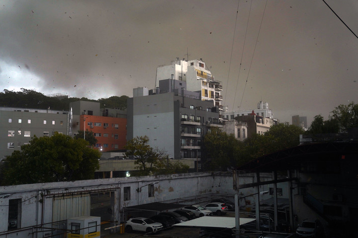

El cielo se puso negro y un diluvio cayó este martes por la tarde sobre la Ciudad y el Gran Buenos Aires , lo que provocó diversas complicaciones, mientras persisten las alertas por tormentas en 17 provincias.
La primera parte de la tormenta ya pasó por el área metropolitana , donde la temperatura bajó hasta los 21 grados. Por la cantidad de agua que cayó hubo algunas demoras en los aeropuertos de Ezeiza y Aeroparque.
Además hubo gran cantidad de árboles caídos en algunos sectores del Gran Buenos Aires, que arrastraron postes del tendido eléctrico y de los servicios de televisión por cable, por lo que rápidamente escuadrillas municipales salieron a realizar las tareas de limpieza.
Soy un simple texto
Soy otro texto